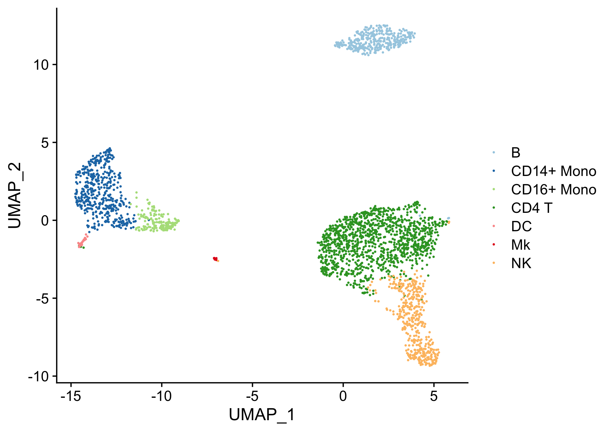

clustifyr classifies cells and clusters in single-cell RNA sequencing experiments using reference bulk RNA-seq data sets, sorted microarray expression data, single-cell gene signatures, or lists of marker genes.
Single cell transcriptomes are difficult to annotate without knowledge of the underlying biology. Even with this knowledge, accurate identification can be challenging due to the lack of detectable expression of common marker genes. clustifyr solves this problem by automatically annotating single cells or clusters of cells using single-cell RNA-seq, bulk RNA-seq data, microarray, or marker gene lists. Additional functions enable exploratory analysis of similarities between single cell RNA-seq datasets and reference data.
Installation
Install the Bioconductor version with:
if (!requireNamespace("BiocManager", quietly = TRUE))
install.packages("BiocManager")
BiocManager::install("clustifyr")Install the development version with:
# install.packages("remotes")
remotes::install_github("rnabioco/clustifyr")Additional info
Intro tutorial
Additional tutorials
Script for benchmarking, compatible with scRNAseq_Benchmark
More reference data (including tabula muris, immgen, etc) are available at supplement package clustifyrdatahub. Also see list for individual downloads.
Publication with parameter and usage discussions has passed peer review on F1000Research.
Example usage
In this example we use the following built-in input data:
- an expression matrix of single cell RNA-seq data (
pbmc_matrix_small) - a metadata data.frame (
pbmc_meta), with cluster information stored ("classified") - a vector of variable genes (
pbmc_vargenes) - a matrix of mean normalized scRNA-seq UMI counts by cell type (
cbmc_ref):
We then calculate correlation coefficients and plot them on a pre-calculated projection (stored in pbmc_meta).
library(clustifyr)
# calculate correlation
res <- clustify(
input = pbmc_matrix_small,
metadata = pbmc_meta$classified,
ref_mat = cbmc_ref,
query_genes = pbmc_vargenes
)
# print assignments
cor_to_call(res)
#> # A tibble: 9 x 3
#> # Groups: cluster [9]
#> cluster type r
#> <chr> <chr> <dbl>
#> 1 B B 0.909
#> 2 CD14+ Mono CD14+ Mono 0.915
#> 3 FCGR3A+ Mono CD16+ Mono 0.929
#> 4 Memory CD4 T CD4 T 0.861
#> 5 Naive CD4 T CD4 T 0.889
#> 6 DC DC 0.849
#> 7 Platelet Mk 0.732
#> 8 CD8 T NK 0.826
#> 9 NK NK 0.894
# plot assignments on a projection
plot_best_call(
cor_mat = res,
metadata = pbmc_meta,
cluster_col = "classified"
)
clustify() can also take a clustered SingleCellExperiment or seurat object (both v2 and v3) and assign identities.
# for SingleCellExperiment
clustify(
input = sce_small, # an SCE object
ref_mat = cbmc_ref, # matrix of RNA-seq expression data for each cell type
cluster_col = "cell_type1", # name of column in meta.data containing cell clusters
obj_out = TRUE # output SCE object with cell type inserted as "type" column
)
#> class: SingleCellExperiment
#> dim: 200 200
#> metadata(0):
#> assays(2): counts logcounts
#> rownames(200): SGIP1 AZIN2 ... TAF12 SNHG3
#> rowData names(10): feature_symbol is_feature_control ... total_counts
#> log10_total_counts
#> colnames(200): AZ_A1 AZ_A10 ... HP1502401_E18 HP1502401_E19
#> colData names(35): cell_quality cell_type1 ... type r
#> reducedDimNames(0):
#> mainExpName: NULL
#> altExpNames(0):
library(Seurat)
# for Seurat3/4
clustify(
input = s_small3,
cluster_col = "RNA_snn_res.1",
ref_mat = cbmc_ref,
seurat_out = TRUE
)
#> An object of class Seurat
#> 230 features across 80 samples within 1 assay
#> Active assay: RNA (230 features, 20 variable features)
#> 2 dimensional reductions calculated: pca, tsneNew reference matrix can be made directly from SingleCellExperiment and seurat objects as well. Other scRNAseq experiment object types are supported as well.
# make reference from SingleCellExperiment objects
sce_ref <- object_ref(
input = sce_small, # SCE object
cluster_col = "cell_type1" # name of column in colData containing cell identities
)
#> The following clusters have less than 10 cells for this analysis: co-expression, ductal, endothelial, epsilon, MHC class II, PSC. Classification is likely inaccurate.
# make reference from seurat objects
s_ref <- seurat_ref(
seurat_object = s_small3,
cluster_col = "RNA_snn_res.1"
)
head(s_ref)
#> 0 1 2
#> MS4A1 0.000000 1.126047 5.151065
#> CD79B 2.469341 2.920407 5.031316
#> CD79A 0.000000 2.535151 5.375681
#> HLA-DRA 3.640368 6.008446 7.055386
#> TCL1A 0.000000 1.495867 4.963367
#> HLA-DQB1 1.603068 3.836290 5.137422clustify_lists() handles identity assignment of matrix or SingleCellExperiment and seurat objects based on marker gene lists.
clustify_lists(
input = pbmc_matrix_small,
metadata = pbmc_meta,
cluster_col = "classified",
marker = pbmc_markers,
marker_inmatrix = FALSE
)
#> 0 1 2 3 4 5 6
#> Naive CD4 T 1.5639055 20.19469 31.77095 8.664074 23.844992 19.06931 19.06931
#> Memory CD4 T 1.5639055 20.19469 31.77095 10.568007 23.844992 17.97875 19.06931
#> CD14+ Mono 0.9575077 14.70716 76.21353 17.899569 11.687739 49.86699 16.83210
#> B 0.6564777 12.70976 31.77095 26.422929 13.536295 20.19469 13.53630
#> CD8 T 1.0785353 17.97875 31.82210 12.584823 31.822099 22.71234 40.45383
#> FCGR3A+ Mono 0.6564777 13.63321 72.43684 17.899569 9.726346 56.48245 14.61025
#> NK 0.6564777 14.61025 31.82210 7.757206 31.822099 22.71234 45.05072
#> DC 0.6564777 15.80598 63.34978 19.069308 13.758144 40.56298 17.97875
#> Platelet 0.5428889 13.34769 59.94938 14.215244 15.158755 46.92861 19.49246
#> 7 8
#> Naive CD4 T 6.165348 0.6055118
#> Memory CD4 T 6.165348 0.9575077
#> CD14+ Mono 25.181595 1.0785353
#> B 17.899569 0.1401901
#> CD8 T 7.882145 0.3309153
#> FCGR3A+ Mono 21.409177 0.3309153
#> NK 5.358651 0.3309153
#> DC 45.101877 0.1401901
#> Platelet 19.492465 59.9493793
clustify_lists(
input = s_small3,
marker = pbmc_markers,
marker_inmatrix = FALSE,
cluster_col = "RNA_snn_res.1",
seurat_out = TRUE
)
#> An object of class Seurat
#> 230 features across 80 samples within 1 assay
#> Active assay: RNA (230 features, 20 variable features)
#> 2 dimensional reductions calculated: pca, tsneFrequently Asked Questions
What types of data can be used as reference?
clustifyruses gene(row)-by-celltype(column) expression matrices. This means bulk RNA-seq and microarray data can be directly used. For scRNA-seq data, we haveaverage_clusters()to convert matrix data and metadata. For Seurat and SCE objects, we provide wrapper functionobject_ref().Can I directly make references from online scRNA-seq datasets? Yes, with the caveat that metadata containing cell type assignments must be available, which is frustratingly uncommon (see our quantification/monitoring of the issue here). We now have a Shiny app
run_clustifyr_app()that can directly preview and use GEO files, andget_ucsc_reference()to build reference from a https://cells.ucsc.edu/ link.Should the input/reference data be normalized? The default metric for
clustifyris ranked correlation, so it does tolerate mixed raw/normalized expression fairly well. Still, we recommend matching the input and ref matrices to the same normalization method if possible. The object wrappers are taking log-normalized data for downstream steps. It should be noted that data slot from SCtransform obfuscates the original gene expression ranking, and is not ideal forclustifyr- in this case we recommend going directly from raw counts.How should I determine parameters? Please see our published manuscript with parameter and usage discussions. In general, default settings are satisfactory in our own internal usage/testing. However, you might want to inspect the correlation matrix and call results, instead of just the final result (use
obj_out = FALSEinclustify()).How many variable genes should I provide? While this of course greatly depends on the datasets in question, we generally have good results with ~500-1000 variable genes. This is why we recommend running
M3Dropfor this step. It should be noted that Seurat V3 onwards automatically stores 2000 by default, which may be too many (if the result correlation matrix shows high and similar values for too many cell types). Currently, by defaultclustify()on Seurat objects will use top 1000 genes.I have “CLASH” in many of my final calls, why is that? “CLASH” indicates ties in the correlation values. In practice, this should be very rare unless the amount of query genes is very (dangerously) low (use
verbose = TRUEinclustify()for more information). Query genes take the intersection of provided gene list (or autodetected from Seurat objects) and genes in the reference.I need help troubleshooting unknown errors in my reference building/clustifying. As we try to provide better error messaging, it is still important to note that, in general, the most error-prone step is at designating the column in the metadata that contains clustering information. This is generally the
cluster_colargument.What if I only have marker gene lists instead of full transcriptome references? Please see
clustify_lists(), which implements several simple methods. In particular, if both positive and negative markers are available, set argumentmetric = "posneg".Do I need to have equal number of marker genes per cell type? Better support will be our next focus. Currently
metric = "posneg"works with uneven numbers of markers. An alternative workflow can be used with argumentinput_markers = TRUE:
# pbmc_markers as FindAllMarkers output gene list
pbmc_input <- matrixize_markers(pbmc_markers)
# reference gene list that is uneven length
pbmc_ref_mm <- pos_neg_marker(
list(B = c("CD79A", "CD79B", "MS4A1"),
NK = c("GZMB", "GNLY"))
)
# reverse input and reference
res <- clustify_lists(
pbmc_ref_mm,
pbmc_input,
metric = "jaccard",
input_markers = TRUE
)Why is the default setting
per_cell = FALSE? While doing classification on per cell level is available, it is slow and not very accurate. Default settings are also not optimized for per-cell classification.clustifyris mainly focused on leveraging results from clustering techniques. As other aspects of scRNA-seq analysis is often focused on clusters, we have set our focus on this resolution as well. This does mean that improper clustering of either the query or ref datasets will lead to issues, as well as cases of continuous cellular transitions where discrete clusters are not present. From benchmarking, even 15 cells per cluster is still performing well, and in our internal usage we would intentionally overcluster the data and check ifclustify()results are stable (see alsoovercluster_test()).Can I use multiple references in the same clustify run? Yes, simply adding columns to a reference matrix works to expand it. We also provide
build_atlas(), which can be run along the lines ofbuild_atlas(matrix_objs = list(reference1, reference2, reference3, ...), genes_fn = clustifyr::human_genes_10x).Does clustifyr work for spatial scRNA-seq data? It works decently on the Seurat tutorial data. See short example for both
clustify()(correlation) andclustify_lists()(gene list enrichment) approaches. (Note, as mentioned above, we recommend avoiding SCtransform data, and opting for using raw data directly instead. This can now be directly handled by Seurat wrapper.)Can I pull out additional information on what gene signatures don’t match the reference clusters? Please add arguments
organism = "hsapiens", plot_name = "rank_diffs"toclustify(). This saves a “rank_diffs.pdf”, comparing gene expression of the queried clusters versus the assigned reference cell gene signature. Highlighted in red are genes expressed (ranked) higher in query data, and in blue gene expressed (ranked) lower than the reference. Top 10 GO-BP terms are also included. See the functionassess_rank_bias()for step-by-step generation of the plot outside of theclustify()wrapper.How do I cite
clustifyr?
citation("clustifyr")
#>
#> Fu R, Gillen A, Sheridan RM, Tian C, Daya M, Hao Y, Hesselberth JR,
#> Riemondy KA (2019). "clustifyr: An R package for automated single-cell
#> RNA sequencing cluster classification." _F1000 Research_. doi:
#> 10.12688/f1000research.22969.1 (URL:
#> https://doi.org/10.12688/f1000research.22969.1).
#>
#> A BibTeX entry for LaTeX users is
#>
#> @Article{,
#> title = {clustifyr: An R package for automated single-cell RNA sequencing cluster classification},
#> year = {2019},
#> author = {Rui Fu and Austin Gillen and Ryan M. Sheridan and Chengzhe Tian and Michelle Daya and Yue Hao and Jay R. Hesselberth and Kent A. Riemondy},
#> journal = {F1000 Research},
#> doi = {10.12688/f1000research.22969.1},
#> }Code of Conduct
Please note that the clustifyr project is released with a Contributor Code of Conduct. By contributing to this project, you agree to abide by its terms.